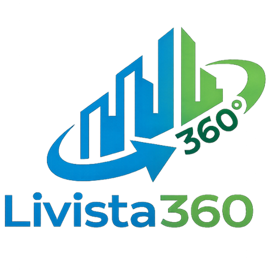
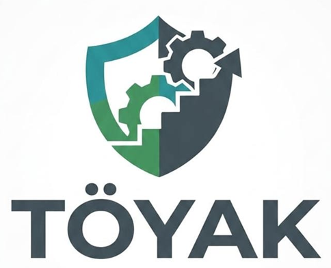
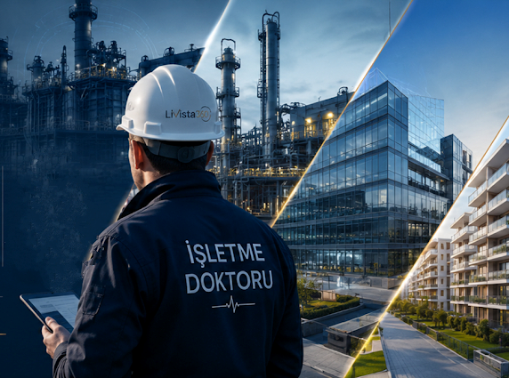

TÖYAK®'">Geleneksel denetimler bitti! Livista360 ve tescilli TÖYAK® 5D algoritması ile tesisinizin operasyonel röntgenini çekiyor, maliyet sızıntılarını durduruyoruz.
Ücretsiz Tesis Röntgeni İste
Livista360; 15 yılı aşan profesyonel yönetim ve 10 yılı aşan tesis yönetimi tecrübesinin getirdiği Know-How'ın paylaşılması arzusundan doğan bir oluşumdur. Bu tecrübe, modern yönetim ve kurumsal gelişim metodlarını birleştiren; mülk sahipleri ile müteahhitlere tesislerin daha projelendirme aşamasından başlayarak yönetilebilir ve sürdürülebilir birer tesis olarak planlanması ve inşasını öğütleyen bir öğretidir.
Özetle Livista360; "Yaşam alanlarına ve işletmelere, 360 derecelik bütünsel bir vizyonla değer katan, geleceği ve hayatı yöneten marka"dır.
TÖYAK, (Tesis Ölçeklendirme, Yönetim ve Analiz Kriterleri) kelimelerinin baş harflerinden oluşan bir kurumsal sağlık analiz ve değerlendirme matrisidir.
TÖYAK, kurumsal yapılarda ya da mevzuat/Analiz çalışmalarında süreçleri otonomlaştırmak için kurgulanan özgün bir yönetim modeli ve yapısal olarak şu mühendislik algoritmalarını temsil eden bir operasyonel akış modelidir:
Livista360’ın operasyonel gücü, TÖYAK Matrisi’nden geliyor. Bu matris, merdiven altı yönetim firmaları ile profesyonel yapıları ayıran; tesisleri, fabrikaları, şantiyeleri ve şirketleri matematiksel bir standarda oturtan kurumsal analiz modelimizdir. Hem kanun nezdinde bir tesisin hangi sınıfta olması ve nasıl yönetilmesi gerektiğini belirleyen hukuki bir norm, hem de Livista360'ın sahada uyguladığı operasyonel bir check-up mimarisidir.
TÖYAK Modelinin 5 Ana Sütunu:
Proje bütçelerinde maksimum hassasiyet sağlayarak hedef maliyetten sapmaları en aza indiriyor, sürpriz harcamaların önüne geçiyoruz.
Operasyonel giderlerde gözle görülür düşüş sağlayarak işletmenizin kârlılığını artıran sürdürülebilir finansal çözümler sunuyoruz.
Doğru verilerle yapılan isabetli planlama sayesinde işletme sermayesinin (OPEX) geri dönüş hızını maksimum seviyeye çıkarıyoruz.
Şeffaf yönetim ilkelerimizle piyasadaki kurumsal itibarınızı güçlendiriyor, istikrarlı ve güvenli büyümenizi destekliyoruz.
Fahiş aidat algısını ortadan kaldırıyoruz. Optimize maliyet yönetimi ile aidat artış oranlarını kontrol altına alıyor, zarardan kâra geçen yapılar kuruyoruz.
21 ana süreç grubunda 600'e yakın dinamik soru ile nesnel durum tespiti.
Süreçlerin işletme için hayati kritiklik ve risk seviyelerine göre özgün ağırlıklandırma.
Fabrika, AVM ve karma projeler, konut sitesi veya şirketlere özel "terzi usulü" otonom dinamik analiz.
Yanıltıcı cevapları engelleyen anti-manipülasyon ve çapraz doğrulama mekanizması.
ISO 41001 ve IFMA normlarında uluslararası kıyaslanabilir (Global Benchmarking) kurumsal olgunluk karnesi.
Sahanın operasyonel röntgeni çekilir. Kayıp, kaçak, israf ve riskler TÖYAK® algoritmasıyla tespit edilir.
Tesis türüne özel tedavi yöntemi belirlenir. Standart Operasyon Prosedürleri ve KPI'lar oluşturulur.
Reçete sahada uygulanır, düzenli denetimlerle tesis otonom ve sürdürülebilir bir yapıya kavuşturulur.
| Değerlendirme Kriteri | Geleneksel Site Yazılımları | Uluslararası CAFM / IWMS | Geleneksel Danışmanlık | TÖYAK® (Livista360) |
|---|---|---|---|---|
| Analiz Mimarisi | Tek boyutlu (Evet/Hayır) | İş emri ve veri takibi | İnsan gözlemine dayalı | 5 Boyutlu Dinamik Algoritma Motoru |
| Soru Derinliği | Sınırlı kontrol listesi | Modüler veri girişi | Danışmanın tecrübesine bağlı | 21 Süreçte 600'e Yakın Dinamik Soru |
| Doğrulama Güvenilirliği | Sadece beyan kabul eder | Manuel veri girişi | Gözlemsel örnekleme | Anti-Manipülasyon Çapraz Doğrulama |
| Hedef Kitle Esnekliği | Sadece konut/site | Karmaşık kurumsal yapılar | Sınırlı alanlar | Fabrika, AVM ve karma projeler, Konut Sitesi, Şirketler |